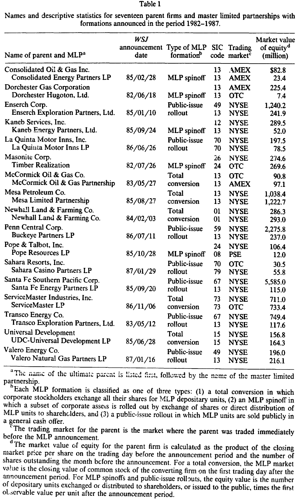
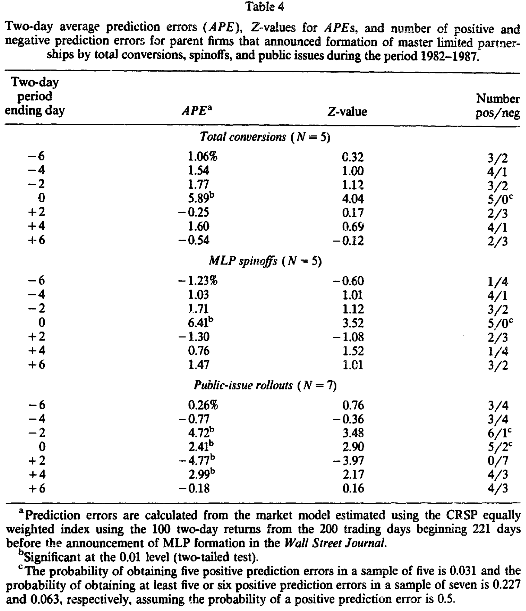
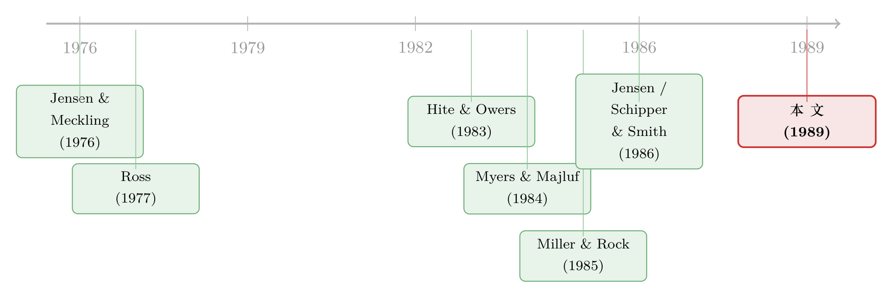

把公司「拆」成合伙制：一桩 1980 年代的避税实验，与股价给出的判决
本文读的是 Moore, Christensen & Roenfeldt (1989, JFE)：1982–1987 年间，公司把资产搬进「主有限合伙」(master limited partnership, MLP) 这种组织形式，平均给母公司股东带来了显著为正的超额收益——整体 4.61%，其中整体转换 5.89%、以分股形式剥离 6.41%、以公开发售形式剥离 2.41%。一个看似纯粹的「避税把戏」，背后却同时拨动了税收、自由现金流、信号与信息不对称这几根弦。
1 一个被骂成「美国去公司化」的发明
1981 年，Apache Petroleum 公司做了一件当时看来颇为离经叛道的事：它把自己的权益份额，挂到了一家主要交易所上挂牌交易——但挂的不是股票，而是一家有限合伙的份额。这就是后来声名大噪、也声名狼藉的「主有限合伙」(master limited partnership, MLP)。
捧它的人说，这是一种富有创意的新型投资工具；骂它的人则在《福布斯》上直接放话：这玩意儿是个税收漏洞，搞下去会导致「美国的去公司化」(disincorporation of America)。话说得够重。但市场不管嘴仗——到 1986 年，MLP 的权益发行规模超过了 $4 billion，而同期普通股的首发也不过刚过 $31 billion。一种「另类」的组织形式，硬是把自己做成了公司制的正经替代品。
这里就埋下了本文的张力：一家公司把资产从「公司」搬进「合伙」，到底创造了价值，还是只是把税务局的钱挪进了股东口袋？ 更微妙的是，这桩交易从来不是单一动机的——它同时牵动了好几件事，有的该让股价涨，有的该让股价跌。要把它们一个个拆开来看，得有一把足够干净的尺子。
2 三种「拆法」，与一把叫事件研究的尺子
首先要厘清的是：MLP 不是只有一种做法。论文把样本里的 17 桩交易分成三类，这个分类是理解全文的钥匙——
- 整体转换 (total conversion)：公司股东把手里全部的股票，换成 MLP 的存托份额 (depositary units)。整个公司就此「变身」。Mesa Petroleum 在 1985 年走的就是这条路。
- MLP 分股剥离 (MLP spinoff)：只把一部分资产剥离出来，单独成立 MLP，再把份额直接分配给母公司股东（或让股东拿旧股来换）。不涉及对外融资。这很像我们熟悉的公司分拆 (corporate spinoff)。
- 公开发售剥离 (public-issue rollout)：同样是剥离一部分资产，但 MLP 份额是公开向市场出售的——这就掺进了一次对外的权益融资。它更像股权切离 (equity carve-out)。
这三种「拆法」的差别，绝不只是程序上的。第三种掺了一次对外发股，而金融学告诉我们：对外发股票，往往是个坏消息。这就让公开发售剥离从一开始就背着一个负担。记住这个伏笔。
那怎么量「市场怎么看」？答案是经典的事件研究 (event study)。逻辑朴素得近乎粗暴：找到母公司在《华尔街日报》(WSJ) 上宣布成立 MLP 的那一天，看它的股票在公告窗口期里，相对于「本来该有的收益」多赚（或少赚）了多少。这「多出来的部分」，就是超额收益 (abnormal return)——它捕捉的，正是这条消息给市场带来的、此前没有被price in 的新信息。
样本是怎么来的？作者从 Stanger Register 和 SEC 的注册与发行统计 (ROS) 文件里，先捞出 141 家 MLP，再层层筛：只留由公司资产转化而来的（剔除把若干现有合伙「攒」成一家的 rollup）、只留在 SEC 备案前就上过 WSJ 的、再剔掉公告当天或前一天还撞上其它重大新闻的——免得别的消息污染了这次事件。一通筛下来，剩下 17 桩干净的 MLP 成立公告。其中整体转换 5 桩、分股剥离 5 桩、公开发售剥离 7 桩。

Table 1
样本虽小，却有几个值得记住的特征。其一，高度集中在油气开采业：17 家 MLP 里有 10 家在这个行业，占 MLP 权益总值的 59.2%。这不是巧合——油气业正是 Jensen (1986) 点名的「自由现金流泛滥」的典型行业，后面会看到这一点的分量。其二，剥离出来的 MLP 个头不小：分股剥离的相对规模平均达母公司权益的 37.2%，远高于 Hite & Owers (1983) 记录的公司分拆 6.6%、和 Schipper & Smith (1983) 的 19.7%；公开发售剥离则平均占 10.3%。
3 判决：股价说「好」
那么，市场的判决是什么？
结论干脆利落：三类交易，母公司股东都获得了显著为正的超额收益。 整体来看是 4.61%；拆开看——
- 整体转换：
5.89% - 分股剥离：
6.41% - 公开发售剥离：
2.41%

Table 4
注意这里的层次。不掺对外融资的两类（整体转换 5.89%、分股剥离 6.41%）反应更强；掺了一次公开发股的那一类（2.41%）反应明显更弱。 前面埋的伏笔，在这里兑现了：对外权益融资本身带着一层负面信息（这正是 Myers & Majluf (1984) 的经典命题），它像一块砝码，把本该更高的正反应往下压了一截。但即便被压，公开发售剥离的反应仍然是正的——这说明 MLP 化的好处足够大，连一次「坏消息式」的发股都没能把它拖成负数。
这是全文真正的「核心」：MLP 化是一个净正的事件，而三类做法的强弱排序，恰好印证了「对外融资是负面信号」这条老规律。围绕这一个核心，论文剩下的工作，就是去回答——这份正收益，到底从哪儿来？
4 正收益从哪来：四条线索，一桩交易
作者没有满足于「股价涨了」这个事实，而是顺着招股书和致股东的信，去翻 MLP 化的动机。结果发现，这一桩交易同时踩中了好几个价值创造的来源。
第一，避税。 MLP 在样本期内是按合伙制纳税的，绕开了公司面对的双重征税 (double taxation)。16 份招股材料里，有 11 份明确把这次重组部分地归因于税收节省。Mesa 的招股书直白地说，这么做能让油气资产的未来现金流「免于本会落在公司头上的联邦所得税」而直接分给所有者。1986 年的《税改法案》把这层好处放得更大——它把公司最高税率定得高于个人普通所得的最高税率，又抬高了资本利得税。换句话说，当时的税制结构，正好偏爱合伙制。
第二，自由现金流 (free cash flow)。 这是 Jensen (1986a) 的地盘。合伙协议通常会硬性规定现金分配政策——16 份材料里有 14 份写明了最低现金支付额，且都承诺把扣除资本开支后的现金流尽数派出。这等于给管理层戴上了一道紧箍咒：钱不能再憋在公司里乱花，必须吐给投资者。对油气这种「现金多、好项目少」的行业，这恰恰治在了点子上。（关于自由现金流这条主线的来龙去脉，可参见《现金为什么一定要「还」出去？——四十年后，重读 Jensen 的自由现金流》。）
这条线索还有个直观得吓人的旁证：现金分配的量级，发生了数量级的跳变。 五桩整体转换，转换前母公司普通股的年股息率平均只有 1.6%，而新 MLP 份额隐含的年现金派发率平均高达 9.5%。分股剥离这一边是 9.0%。公开发售剥离的母公司转换前普通股年股息率 2.4%，对应 MLP 份额隐含 11.4%。从 1.6% 到 9.5%，从 2.4% 到 11.4%——这不是修修补补，这是把现金流的水龙头整个换了一个。
第三，信号 (signaling)。 既然要承诺一个高得多的固定派发，管理层就是在向市场传递一种「这个派付我撑得住」的信心——这是 Ross (1977) 的信号逻辑；而派发水平的剧变本身也会改变权益收益率，从而泄露管理层的盈利预期，这是 Miller & Rock (1985)。
第四，信息不对称的缓解，与资产管理的改善。 这一条只对「剥离」类成立（整体转换没有这个效果）。当一部分资产被单独切出来、创造出可公开交易的份额，并被迫接受 1933 与 1934 两部证券法的披露要求时，内部经理与外部投资者之间关于「这块资产到底值多少」的信息差，就被抹平了一截——这正是 Schipper & Smith (1986) 给股权切离找到的功能。Santa Fe Southern Pacific 在宣布剥离时甚至直说：自家股票的市价「没有反映它的油气资产」。同时，把业务单元分出去，也减少了经理需要操心的「事务种类」，让资产管理更专注、更高效（Coase 1937、Penrose 1959 的老话题）。
把这四条线索叠在一起看，就理解了为什么剥离类（5.89%、6.41%）反应更全面：它们除了拿到税收、现金流、信号这三份「公共」好处，还独占了「信息不对称缓解 + 资产管理改善」这两份额外红利。而整体转换虽然没有后两份，却也没沾上「对外发股」的负担。最吃亏的反而是公开发售剥离——它本该拿到全部五份好处，却被一次发股的负面信号扣了分。
当然，硬币还有另一面。MLP 也有让股价下跌的理由：维持详尽税务记录带来的高昂行政成本（Apache 后来在 1988 年转回公司制的头号理由，正是每年能省下约 $4 million、相当于其 1987 年总收入的 2.58% 的管理费）；利益冲突——母公司作为普通合伙人，可能与被剥离的 MLP 直接竞争（12 桩剥离里有 11 桩的合伙协议白纸黑字警告了这种冲突）；以及前面反复说的、公开发股本身的负面信息。市场最终给出的净正反应，意味着在这批样本里，好处压过了坏处。
5 文献脉络
把这篇论文放回它所处的思想坐标系，就更能看清它的位置。
它站在两条大河的交汇处。一条是重组与公司控制权的实证传统：Hite & Owers (1983) 和 Schipper & Smith (1983) 研究公司分拆 (spinoff) 的股价反应，Schipper & Smith (1986) 又把股权切离 (carve-out) 与增发摆在一起比较——MLP 的「剥离」类，本质上就是这两种重组的「合伙制变体」。另一条是契约与代理理论的母体：Jensen & Meckling (1976) 奠定了代理成本与利益冲突的框架，Jensen (1986) 把自由现金流问题推到台前，Ross (1977) 与 Miller & Rock (1985) 提供了信号的语言，Myers & Majluf (1984) 则给出了「对外发股为何是坏消息」的逆向选择解释。

本文的巧妙在于：MLP 这个新组织形式，恰好是一个能同时检验这么多理论的天然容器。它一桩交易里捆着避税、捆着现金流约束、捆着信号、捆着信息不对称——而通过把样本切成「掺不掺对外融资」「整体还是局部」三类，作者得以让这些理论彼此「对质」。（顺着重组与分拆这条线，可参见《拆掉一家公司，是为了让老板「坐不住」》与《拆完公司，钱在三年后才显形——而它只发给被收购的那一半》；顺着「发股未必是坏消息」这条线，可参见《新股增发，凭什么不一定是坏消息？》。）
6 一个尾声：税改之后，潮水退去
这个故事还有一个略带宿命感的结尾。1987 年 12 月，《综合预算调节法案》(Omnibus Budget Reconciliation Act) 通过，MLP 的核心税收优势被一刀砍掉。后果立竿见影：MLP 新发行规模从 1987 年三季度的 $420.2 million，暴跌到 1988 年同季的 $20.2 million。连开创了这一切的 Apache Petroleum，也在 1988 年 8 月动手把自己改回了公司制。
这恰恰反过来印证了本文的判断：如果 MLP 化的正收益里，避税是一根重要的支柱，那么抽掉这根柱子，整栋楼就该塌——而它确实塌了。市场当年给的那份溢价，并非空穴来风。
评论与延伸（Q&A + 研究方向）
几个可能的疑问
Q：只有 17 个样本，这结论还能信吗？
这是本文最硬的软肋。17 桩交易里再切成 5/5/7 三组，每组的统计功效都很弱，分组之间的差异更难说显著。所以更稳妥的读法是：本文是一份描述性 + 探索性的早期证据，它告诉你「方向为正、且与多个理论一致」，但别把任何一个子样本的点估计当成精确真理。
Q：四种机制（税、现金流、信号、信息）都指向「正」，那这篇文章到底识别出了哪一个？
老实说，它没能干净地分离任何单一机制——这正是事件研究面对「一揽子动机」交易时的通病。作者的策略是用三类做法的强弱排序来做间接区分（比如用「掺不掺发股」把 Myers-Majluf 效应剥出来，用「整体还是局部」把信息不对称效应剥出来），这是聪明的，但仍属于「证据一致」而非「因果识别」。真正的避税贡献有多大，要到 1987 税改这个自然实验里才看得更清。
Q：剥离类的相对规模（37.2%）远大于普通公司分拆（6.6%），这会不会让两者不可比？
会，而且这是个有意思的点。更大的相对规模意味着「被剥离的那块」对母公司更重要，信息释放与现金流承诺的冲击也更大——这或许部分解释了为何 MLP 剥离的反应（6.41%）比典型公司分拆更强。但它也提醒我们：MLP 样本可能本身就偏向「值得大动干戈」的资产，存在选择问题。
Q：公开发售剥离只有 2.41%，是不是说明对外发股真的拖了后腿？
方向上一致，但要谨慎。三类的差异既可能来自「发股的负面信号」，也可能来自这三类公司本身就不一样（行业、规模、现金流特征）。本文样本太小，无法把「做法效应」和「公司选择效应」分开。这恰恰是后续研究该补的洞。
Q：股息率从 1.6% 跳到 9.5%，这是真的多分了钱，还是只是「换了个口径」？
关键问题。MLP 的高派发里，有相当一部分其实是资本返还（油气资产的折耗），而非传统意义上的盈利分红——所以 9.5% 不能直接和公司股息的 1.6% 等量齐观。本文用它来说明「现金流约束的承诺力度」是合适的，但若要论「股东实际多拿了多少现金」，需要更细致的拆分。
Q：既然 1987 税改后 MLP 纷纷转回公司制，那这篇文章是不是「过时」了？
恰恰相反。它的价值正在于记录了一个完整的制度生命周期：税收优惠催生 → 市场给正溢价 → 优惠被取消 → 形式消亡。这为「税收驱动的组织形式选择」提供了罕见的、首尾完整的实证案例。（关于税与公司金融的全景，可参见《100% 借债，还是一分不借？——一篇综述，把「税」拧成公司金融的一根主线》。）
几个可能的研究问题与提案
-
MLP 化对母公司债权人的财富效应。 【经济故事】本文只看了股东。但把高现金流资产剥离出去、并承诺把现金尽数派给 MLP 份额持有人，对留在母公司里的债权人几乎一定是坏消息——抵押资产被搬走、可分配现金被锁定。这是一桩典型的股东-债权人财富转移。 【可行性】中。需要母公司在 MLP 公告窗口的公司债价格（早期可用 Lehman/NAIC 之类的债券数据），样本同样会很小，但「股价涨、债价跌」的对照本身就很有说服力。识别上仍受小样本之困。
-
用 1987 税改做一次干净的「税收贡献」分解。 【经济故事】把税改前 MLP 化的正溢价，与税改后「转回公司制」的市场反应放在一起，理论上能把「避税」这一块从其它机制里减出来——如果税改后转回公司制的反应也是正的（因为省了行政成本、消了利益冲突），那说明非税机制本身就有价值。 【可行性】中偏低。转回公司制的样本更稀少（Apache 是少数案例之一），但作为一个 clinical / 小样本研究是 doable 的，且叙事极完整。
-
MLP 份额二级市场的流动性与「打包」溢价。 【经济故事】MLP 把单一资产组（如一批油气井）打包成可交易份额，本身可能创造了一种流动性溢价——投资者愿意为「能随时买卖一篮子油气现金流」多付钱。这与公司债/信用市场里「同样的现金流，谁持有、好不好卖，决定了它值多少」的逻辑相通。 【可行性】中。需要 MLP 份额上市后的交易数据（买卖价差、换手率），与同类未上市资产做对照。数据获取有难度，但思路清晰。
-
外资与机构持有人在 MLP 中的缺席，及其定价后果。 【经济故事】合伙制的税务穿透特性，使得免税机构与外国投资者持有 MLP 份额会触发棘手的税务问题（如 UBTI），从而系统性地把一大类边际买家挡在门外。这会压低 MLP 份额的需求曲线、抬高其要求回报。这是「持有人结构决定价格」在一个税收驱动的天然实验里的体现。 【可行性】中。需要 MLP 份额的持有人构成数据，与普通股对照。现代 MLP（2000 年后能源类）数据更全，可做横截面定价检验，doable。
参考文献
Coase, R.H. (1937). The nature of the firm. Economica 4, 386–405.
Hite, G. and J. Owers (1983). Security price reactions around corporate spin-off announcements. Journal of Financial Economics 12, 409–436.
Jensen, M.C. (1986a). Agency costs of free cash flow, corporate finance, and takeovers. American Economic Review 76, 323–329.
Jensen, M.C. (1986b). The takeover controversy: Analysis and evidence. Midland Corporate Finance Journal 4, 6–32.
Jensen, M.C. and W.H. Meckling (1976). Theory of the firm: Managerial behavior, agency costs and ownership structure. Journal of Financial Economics 4, 305–360.
Miller, M. and K. Rock (1985). Dividend policy under asymmetric information. Journal of Finance 40, 1053–1070.
Moore, W.T., D.G. Christensen and R.L. Roenfeldt (1989). Equity valuation effects of forming master limited partnerships. Journal of Financial Economics 24, 107–124.
Myers, S. and N. Majluf (1984). Corporate financing and investment decisions when firms have information that investors do not have. Journal of Financial Economics 13, 187–221.
Penrose, E. (1959). The theory of the growth of the firm. Oxford: Blackwell.
Ross, S. (1977). The determination of financial structure: The incentive signalling approach. Bell Journal of Economics 8, 23–40.
Schipper, K. and A. Smith (1983). Effects of recontracting on shareholder wealth: The case of voluntary spin-offs. Journal of Financial Economics 12, 437–467.
Schipper, K. and A. Smith (1986). A comparison of equity carve-outs and seasoned equity offerings: Share price effects and corporate restructuring. Journal of Financial Economics 15, 153–186.